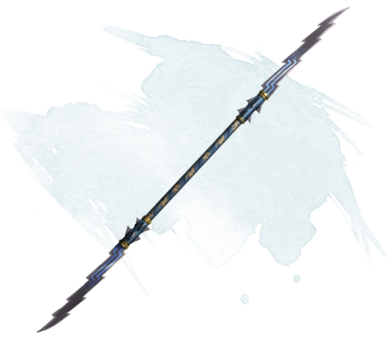

Javelin of Lightning
Weapon (javelin), uncommon
This javelin is a magic weapon. When you hurl it and speak its command word, it transforms into a bolt of lightning, forming a line 5 feet wide that extends out from you to a target within 120 feet. Each creature in the line excluding you and the target must make a DC 13 Dexterity saving throw, taking 4d6 lightning damage on a failed save, and half as much damage on a successful one. The lightning bolt turns back into a javelin when it reaches the target. Make a ranged weapon attack against the target. On a hit, the target takes damage from the javelin plus 4d6 lightning damage. The javelin's property can't be used again until the next dawn. In the meantime, the javelin can still be used as a magic weapon.
Dungeon Master´s Guide (SRD)
